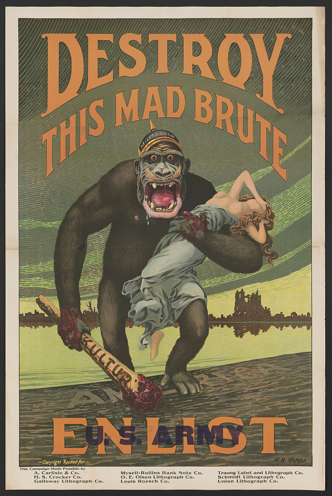
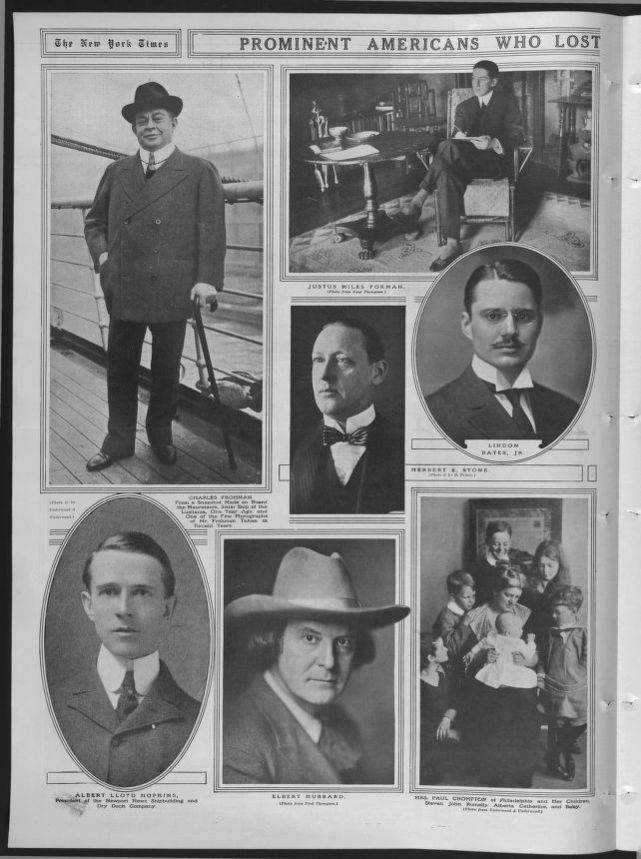
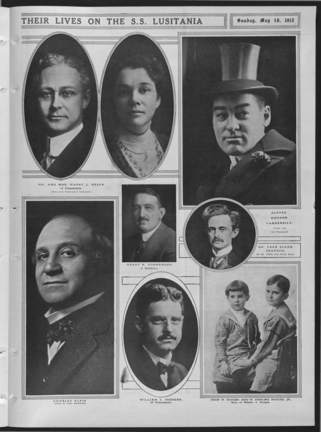
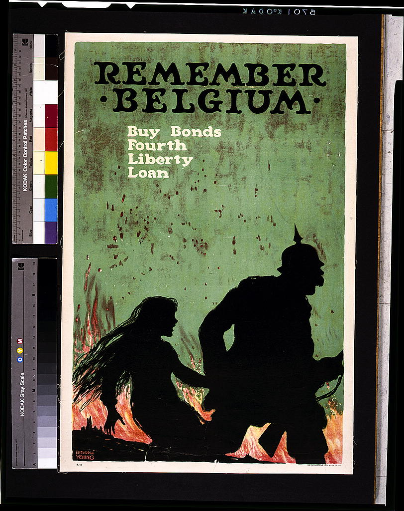
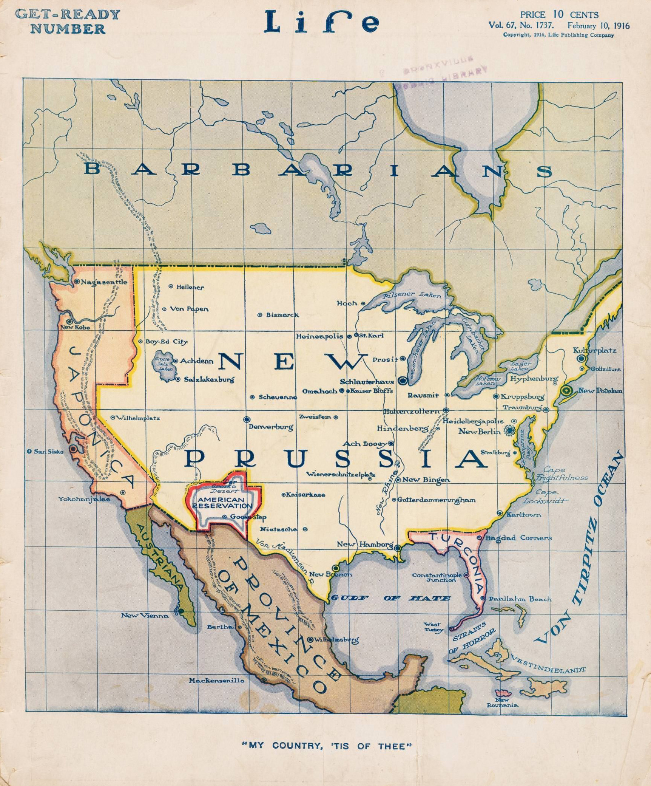
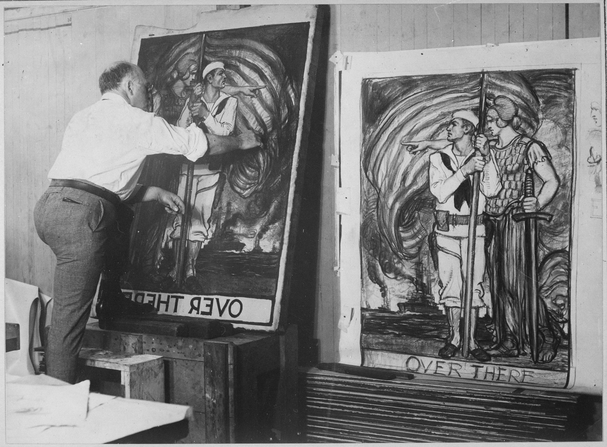

U.S. Entry into World War I
Table of Contents
1. Introduction
In the early 20th century, the United States was undergoing great change. Roosevelt, who increased regulation and became known as the “trust-buster”, retired after two terms, passing the presidency onto Taft. However, Taft was not following progressive trends and alienated much of the Republican party, leading to a four-way race in 1912. Wilson, a democrat with a reputation as a reformer, promised “New Freedom”: the restoring of free competition and equal economic opportunity, whilst keeping federal control below the levels Roosevelt had wanted. Wilson won on this platform, and began making change - though more hesitantly than progressives wanted. By 1916, Wilson had reduced tariffs on materials and goods, instituted the first graduated income tax, created Federal Reserve Banks, and increased protections for labour unions and strikers.
However, the outbreak of World War I in Europe cut many of Wilson’s plans short. Dealing with the war proved to be a challenging task, as the United States became a key supplier to the Allies despite a facade of neutrality. At the start of the war in 1914, the American public was overwhelmingly against participating in the conflict, but events such as the Rape of Belgium turned opinion of Germany low, and the sinking of the RMS Lusitania led to increasing support for joining the Allies. Wilson himself was outraged. As Germany was prevented from receiving shipments by Britain, it no longer traded with the US, whilst trade with the Allies increased dramatically, almost quadrupling in value from 1914 to 1916. The United States was neutral only in name.
As Germany began submarine warfare in 1915, leading to the death and wounding of American civilians on ships from Allied countries, the administration began preparing for war, doubling the size of the regular army. Though Wilson had successfully campaigned for re-election in 1916 with the slogan “He Kept Us Out of War”, Germany’s 1917 declaration of unrestricted submarine warfare made it impossible to preserve the appearance of neutrality. In March, the White House intercepted the Zimmerman Note, an offer of alliance from Germany to Mexico in the event the US joined the Allies. That same month, German boats sunk seven American merchant ships, killing hundreds. The time had finally come for Wilson to make the case for war to Congress, which he did on 02 April, 1917. He signed a declaration of war four days later. The United States had entered the Great War.
2. Gallery

This war propaganda poster from 1918 illustrates how the American public’s opinion of Germany was coloured by the events such as the Rape of Belgium and the killing of Americans on ships due to unrestricted submarine warfare. Americans were incentivised to join the US Army in order to stop the German “ape” from imposing its “kultur” on the world. Germany is depicted as a “mad brute”, hauling away a woman in Classical dress and posture with bloody hands while wearing the crown of “militarism”. The woman, revealing something of the gender norms of the time and calling back to 19th century ideas of Manifest Destiny and imperialism, represents liberty and democracy - something precious and beautiful soldiers should fight to preserve from Germany’s bloody grip. In the illustration, the ape, presumably having come from the ruined and desolate cities in the background, is stepping onto the shore of America. This piece of propaganda tells the viewer that the German threat has left Europe, and the same destruction suffered by Belgium and France could soon come to the US.

At the start of the war, German submarines would surface to carry out formal searches of cargo and allow crew to escape, but in February of 1915, Germany declared a war zone around Britain in which any ships would be immediately sunk. The RMS Lusitania, a luxury passenger liner, was given no warning before being torpedoed by a German U-boat on 07 May that same year. It was crossing the Atlantic from New York to Liverpool when a German U-20 fired upon it, resulting in a rapid sinking and the death of 1200 of almost two thousand passengers. Though it had been used as a passenger ship since its maiden voyage in 1906, it had been built during a time of rising tensions in Europe, so it was given the ability to be converted into a warship if the need arose. It had indeed been used to carry Allied war materiel, and may have been doing so at the time of its sinking. 128 of the people killed were Americans - a fact which led the US government, neutral at the time, to severely protest Germany’s unrestricted submarine warfare. Germany halted the policy in September, but the pause would prove to be short-lived. In February 1917, unrestricted submarine warfare was resumed.

The 1839 Treaty of London guaranteed Belgian neutrality in European affairs, but Germany paid no regard to this in passing through Belgium in order to defeat France. In doing so, many Belgian towns were ravaged and looted, and their civilians killed or wounded. One of the most famous such cities was Leuven, located east of Brussels. Belgian accounts of the German occupation of Leuven during August 1914 - which were reported in Britain and the US and given credibility over the German version of events - stated that German troops had massacred civilians, raped Belgian women, and destroyed historical buildings. Indeed, German troops burnt the Leuven library during the occupation. Whether or not the Belgians had provoked German troops was unimportant: Allied populations were outraged. The poster above shows a German soldier (recognisable by the characteristic “Pickelhaube” helmet) running from a falling Belgian woman in a blazing city with the provocative title “Remember Belgium”. Allied war propaganda in the United States often took advantage from the strong emotional reaction to apparent “atrocities” such as this to garner support for the war effort and call citizens to action. The Rape of Belgium was one factor that turned American opinion of Germany more and more sour as the war raged on.

Americans were fearful of what would happen if the Great War came to US soil. This 1916 Life Magazine cover artwork depicts a North America split between the Central Powers. The “Gulf of Hate” and “Straits of Horror” warn of tyrannical German rule, and an “American Reservation” harkens back to the conquest of native peoples by European settlers (which, of course, white Americans wished to avoid happening to themselves). Mexico is preserved due to an alliance with Germany, as indicated by the Zimmerman note roughly one year prior to this publication. Cities and bodies of water are renamed. This cover was war-time propaganda, with the purpose of urging American involvement in the war now so as to keep the conflict in Europe and keep the Central Powers out of North America. As World War I continued, Germany was threatening American trade and ships, and an antagonistic relationship was forming between it and the United States despite the latter’s ostensible neutrality. This Life Magazine cover captures the worst fears of the American public a year before the United States’ entry into the war.

Producing and distributing war propaganda was crucial to encouraging the war effort and keeping morale high. This photograph, produced in 1915 by the War Department, shows Albert Sterner painting war posters. The Library of Congress Prints and Photographs Division by itself has digitised copies of about 1900 posters created between 1914 and 1920. The poster as a genre was vital to the widespread dissemination of information during the war, and served to advertise the army, navy, and other parts of the war effort to participating and non-participating civilians. Despite its late entry into the war, American posters numbered greater than posters from any other country.
3. About Me
I’m Felix, a student in Washington D.C. planning to major in computer science and/or astrophysics. Though history is not a passion of mine, I find the world wars and their politics truly fascinating to study and learn from. I chose to look at the States’ entry into WWI for this exhibit as I feel education on the world wars in the public school system is lacking, and because I believe WWI fundamentally changed the United States. Studying this topic allowed me to better understand the United States, as well as the current global political situation.
4. Sources
‘18 Minutes That Shocked the World’. Imperial War Museum, https://www.iwm.org.uk/history/18-minutes-that-shocked-the-world.
‘About This Collection’, https://www.loc.gov/collections/world-war-i-posters/about-this-collection/.
Faragher, John Mack, Mari Jo Buhle, Daniel Czitrom, and Susan H. Armitage. Out of Many: A History of the American People. 8th ed. Pearson, 2015.
Meurer, Christian, and Fernand Mayence. ‘The Blame for the Sack of Louvain’. Current History Magazine, July 1928, 556–71.
New Prussia: ‘My Country, “Tis of Thee”’. 10 February 1916. Life Magazine. Vol. 67.  .
.
‘Prominent Americans Who Lost Their Lives on the S.S. Lusitania’. Picture Section, Part 1, 16 May 1915. https://www.loc.gov/item/sn78004456/1915-05-16/ed-1/.
International FilmService , ed. ‘Albert Sterner Painting War Posters for the Government’. War Department, 1918. https://catalog.archives.gov/id/533471.
‘The Lusitania Disaster’, https://www.loc.gov/collections/world-war-i-rotogravures/articles-and-essays/the-lusitania-disaster/.
5. Further Reading
Faragher, John Mack, Mari Jo Buhle, Daniel Czitrom, and Susan H. Armitage. Out of Many: A History of the American People. 8th ed. Pearson, 2015.
Meurer, Christian, and Fernand Mayence. ‘The Blame for the Sack of Louvain’. Current History Magazine, July 1928, 556–71.
Schaepdrijver, Sophie de. ‘The “German Atrocities” of 1914’. British Library, 29 January 2014. https://www.bl.uk/world-war-one/articles/civilian-atrocities-german-1914.
Zuckerman, Larry. The Rape of Belgium: The Untold Story of World War I, 2004.